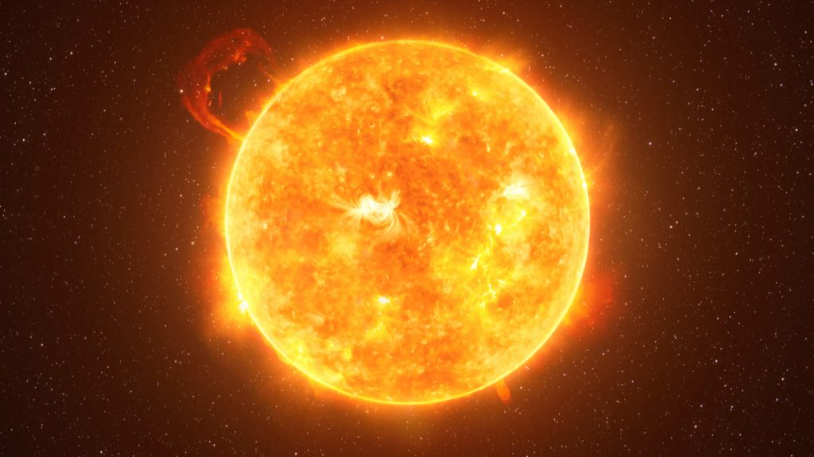

O reator de fusão Tokamak Supercondutor Avançado Experimental (EAST, na sigla em inglês), conhecido
com o “Sol Artificial” da China quebrou, no final do mês de dezembro, o seu antigo recorde. O reator
ficou 10 vezes mais quente que o núcleo do Sol por mais de 17 minutos.le sustentou a temperatura de plasma
de 120 milhões de graus Celsius durante o período. A informação foi divulgada recentemente pela Academia Chinesa de Ciências.
O reator quebrou o recorde conquistado há cerca de sete meses, de apenas 101 segundos, agora chegando à marca de 1.056 segundos.
Para se ter uma ideia do poder deste Sol Artificial chinês, o núcleo do Sol atinge a temperatura de 15 milhões de graus Celsius.
A equipe do Instituto de Física do Plasma da Academia Chinesa de Ciências (AISPP) é quem está por trás do Sol Artificial da China.
“O ASIPP tem uma equipe perfeita. Enfrentaremos as dificuldades por mais difícil que seja!”, disse o professor Yuntao Song, diretor-geral do ASIPP, em comunicado.

O reator de fusão Tokamak Supercondutor Avançado Experimental é capaz de replicar, parcialmente, o processo de fusão nuclear natural das estrelas.
A ideia dos pesquisadores é, com este Sol Artificial, levar à uma produção de energia limpa e sustentável.
A chave para atingir o objetivo é justamente a capacidade do reator EAST de manter altas temperaturas do plasma.
Essas reações de fusão precisam ser autossustentáveis, com o material superaquecido podendo ser usado para criar essa reação.